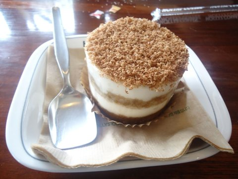

Travel South: valokuvia ja tarinoita
Vuonna 2011 kuvasin Perun ja Bolivian kivirakenteita. Vuonna 2014 kamerani tallensi Perun museoiden kalloja, ja yhdessä kuvassa pidän käsissäni kalloa, jota kokoelma kutsuu nimellä Starchild 2. Helmikuussa 2024 kuvasin Amarna-kauden kivipäitä Kairossa. Näistä kuvista syntyy tämän sivuston kysymys: mitä kamerani tallensi, mitä siitä voidaan selvittää tutkimusten avulla ja millaisen maailman muodot herättävät mielikuvituksessa?
Starchild 2 on kokoelman antama nimi. Se on lainattu toiselta, Meksikosta tunnetuksi tulleelta kallolta, jonka Lloyd Pye toi julkisuuteen. Tämä galleria pitää nämä kaksi kalloa erillään.
Aikajana
- Elokuu 2011 Matka Limasta Nazcan, Titicacan, Bolivian ja Cuscon kautta takaisin Limaan: 15 kohdetta, valokuvat ja videot.
- 30.10.–1.11.2014 Kallokuvat ja museovideot Perussa.
- 15.2.2024 Amarna-kauden kivipäät Egyptiläisessä museossa Kairossa.
- 2026 Aineiston järjestäminen, lähteiden tarkistus ja Kivikaupungin tekoälykuvitukset.
Matkakertomus 2011–2024
Janin muistiinpano: omat kokemukseni, ei tutkimustietoa. Päivämäärät ovat videoiden aikaleimoista.
Reitin näytti Gianina. L Inkasukunimensä perusteella hän kuului vanhaan inkahallitsijasukuun. Nimeä ei lue hänen papereissaan, eikä hän kertonut sitä vieraille. Kuulin, että inkasukunimestä ei tyypillisesti olla ylpeitä, koska siitä kiusataan ”inkaprinsessaksi”.
Tapasimme alun perin WAYN-matkailuyhteisössä netissä. Aikaa oli kolme viikkoa ja maita kolme: Peru, Bolivia ja Chile. Liikuimme lentokoneella, busseilla ja takseilla. Kuljimme paljon, niin että yöt olimme bussissa ja päivät aina uudessa paikassa. Aikataulu oli kiireinen; monessa paikassa olisi voinut viettää päiviä.
Gianina ihaili joka paikassa maisemaa ja pyysi kuvan itsestään se taustalla. Minä olen insinööri, ja työssäni tiiviys ja sovitteet ratkaisevat. Siksi jäin usein tuijottamaan saumoja, en maisemaa. Gianina luki ihmisiä yhtä tarkasti kuin minä kiveä: hän huomasi huijaukset ja vaarat ennen minua. Pieni päänsärky kulki mukana koko ajan yli 4 000 metrissä.
Yksi ilta Callaossa
Matkan alussa olimme Callaossa, Liman satama-alueella. Kävimme Gianinan kaverin luona, ja meitä lähti seuraamaan katujengi. Gianinan neuvosta lähdimme kiertämään kerrostaloa ja käännyimme kesken matkan vastakkaiseen suuntaan. Kadun varressa ei näkynyt ketään. Taksin ikkunasta näimme ison poikajoukon tulevan paikalle ja osoittelevan suuntaamme. Jos olisimme jatkaneet alkuperäiseen suuntaan, he olisivat tulleet vastaan.
Tämä on kokemukseni yhdeltä illalta, ei arvio koko alueesta.
Matka videoiden päivämäärien mukaan
- 29.–31.7.2011 Lima: matka alkaa. 31.7. Pisconlaakso: Monte Sierpen kuoppavyöhyke (Band of Holes).
- 1.–3.8. Huacachina ja Paracas. →
- 5.8. Nazca: lento linjojen yli kello 10.52, samana päivänä Cantalloc, Chauchilla ja Cahuachi. →
- 6.–8.8. Arequipa, sitten yöbussilla Punoon. →
- 8.–10.8. Sillustani, Titicacajärvi, Chucuito ja Aramu Muru. →
- 10.8. Raja, Tiwanaku ja taksi kohti La Pazia. →
- 11.–12.8. Samaipata. →
- 14.8. Salar de Uyuni ja Isla Incahuasi. →
- 15.–16.8. Bolivian ja Chilen raja.
- 17.–19.8. Bussilla Cuscoon; Cusco ja Sacsayhuamán. →
- 20.–21.8. Pisac, Ollantaytambo ja Machu Picchu. →
- 24.–25.8. Callao, Liman satama-alue.
Kolme ihmistä, kolme ovea
Gianina näytti reitin vuonna 2011. Carmen, asianajaja, joka puhui inkasuvustaan ylpeänä, avasi oven Paracasin kallokokoelmaan vuonna 2014. Julie, naisystäväni ja entinen matkanjärjestäjä Filippiineiltä, vei matkaa eteenpäin vuonna 2024. Kaikista käytän vain etunimeä.
A Vuonna 1549 paikalliset nauroivat, kun Cieza de León kysyi, tekivätkö inkat Tiwanakun rakennukset (Crónica del Perú, I osa, luku CV). Vuonna 2011 samat kivet näytti minulle inkasuvun jälkeläinen.
Mitä en vielä voinut tietää
- T Puma Punkun ajoitus tarkentui vuonna 2023: rakentaminen alkoi noin 580 jaa., viimeiset louhitut ja veistetyt kivet ovat noin vuodelta 630 ja työ päättyi noin 710 jaa. (Marsh ym. 2023).
- T Nazcasta löytyi vuonna 2024 tekoälyavusteisella kartoituksella 303 uutta kuviota (Sakai ym. 2024).
- T Vuonna 2025 raportoitiin Palaspata, Tiwanakun temppelikompleksi noin 215 km Tiwanakusta kaakkoon (Capriles ym. 2025).
Silloin ja nyt
Ennen matkaa pidin mahdollisena, ettei Puma Punkun ja Sacsayhuamánin kaltaista saumaa tehdä kivityökaluilla. Nyt: tekijät ovat Tiwanaku ja inkat, mutta työn nopeus ja välineet ovat yhä hyvä kysymys.
Tärkein kuva minulle on kuva 04, Starchild 2 kädessä. Se on ainoa hetki, jolloin en katsonut historiaa lasin läpi.
Mihin palaisin? Puma Punkuun nykytiedon kanssa. Kaikki aktiiviset kaivauskohteet olisi kiinnostavaa kiertää uudestaan, kun välissä on 20 vuotta.
Epilogi
Vuosia myöhemmin Gianina tarjosi minulle 500 hehtaaria Amazonin sademetsää 100 000 eurolla. Suvun vanhimmat eivät enää jaksaneet kiertää ja merkitä maidensa rajoja. Ajattelin, että vaikka hehtaari sademetsää elättää pienen kylän, paikka on niin kaukana, ettei tiluksistaan pääsisi nauttimaan, ja käymättömän maan menettäisi paikallisille. Kieltäydyin kohteliaasti.
Reitti alkoi suvusta, jonka nimeä ei sanota, ja päättyi maahan, jonka rajoja kukaan ei enää jaksanut kiertää.
Alkuperäisiä valokuvia 2011



Kolme reittiä


Mitä tutkimus on selvittänyt
- Nazcan linjat Vuonna 2024 julkaistu tutkimus löysi 303 uutta kuviota aiemmin tunnettujen 430:n lisäksi. (Sakai ym. 2024)
- Machu Picchu Radiohiiliajoitusten mukaan paikka oli käytössä jo noin vuonna 1420, aiemmin kuin kronikoista on päätelty. (Burger ym. 2021)
- Puma Punku Rakentaminen alkoi noin 580 jaa. ja päättyi noin 710 jaa., vuosisatoja ennen inkoja. (Marsh ym. 2023)
- Paracas Cerro Coloradon haudoista tutkituista 159 ihmisestä 98 prosentilla oli lapsuudessa muotoiltu kallo. (Gómez-Mejía ym. 2022)
- Kairo ja Peru Amarnan pitkät päät ovat veistoksia, Perun kallot luuta. Muotojen samankaltaisuus on visuaalinen, ei todiste yhteydestä.
Kuvagalleriat: 15 kohdetta
Perun rannikko
 Nazcan linjatMitkä maakuviot näkyivät polulla kävelevälle?
Nazcan linjatMitkä maakuviot näkyivät polulla kävelevälle? Nazcan hautausmaat ja vesikanavat: Chauchilla, Cahuachi, CantallocMiltä Cahuachin savitiilinen piha näytti, kun sen läpi kuljettiin?
Nazcan hautausmaat ja vesikanavat: Chauchilla, Cahuachi, CantallocMiltä Cahuachin savitiilinen piha näytti, kun sen läpi kuljettiin? Paracas ja HuacachinaAavikko päättyy suoraan kylmään, eläinrikkaaseen mereen.
Paracas ja HuacachinaAavikko päättyy suoraan kylmään, eläinrikkaaseen mereen.Titicaca
 SillustaniHautatorni, joka on ylhäältä leveämpi kuin alhaalta.
SillustaniHautatorni, joka on ylhäältä leveämpi kuin alhaalta. Puno ja TiticacajärviUros-saaret punotaan totoraruo'osta, ja niitä on rakennettava jatkuvasti uudelleen.
Puno ja TiticacajärviUros-saaret punotaan totoraruo'osta, ja niitä on rakennettava jatkuvasti uudelleen. Chucuito: Inca UyoKymmeniä kivisiä fallossymboleja pienessä aitauksessa. Kuinka vanhoja ne ovat?
Chucuito: Inca UyoKymmeniä kivisiä fallossymboleja pienessä aitauksessa. Kuinka vanhoja ne ovat? Aramu Muru (Hayu Marca)Kallioon hakattu oviaukko, jonka takana ei ole huonetta.
Aramu Muru (Hayu Marca)Kallioon hakattu oviaukko, jonka takana ei ole huonetta.Cusco ja Pyhä laakso
 CuscoKuka teki tämän sauman, ja mitä sen ympärille rakennettiin myöhemmin?
CuscoKuka teki tämän sauman, ja mitä sen ympärille rakennettiin myöhemmin? SacsayhuamánKolme siksakmuuria nousee rinnettä ylös Cuscon yllä.
SacsayhuamánKolme siksakmuuria nousee rinnettä ylös Cuscon yllä. Machu PicchuPaikallisia viljelijöitä asui täällä, kun Hiram Bingham saapui 1911.
Machu PicchuPaikallisia viljelijöitä asui täällä, kun Hiram Bingham saapui 1911. © Jani Korpi · CC BY-SA 3.0 · Wikimedia CommonsOllantaytamboVaaleanpunaisia kiviä makaa hylättyinä louhokselta tulevan tien varrella.
© Jani Korpi · CC BY-SA 3.0 · Wikimedia CommonsOllantaytamboVaaleanpunaisia kiviä makaa hylättyinä louhokselta tulevan tien varrella. Pisac ja Pyhä laaksoTerassit laskeutuvat rinnettä kuin jättimäiset portaat.
Pisac ja Pyhä laaksoTerassit laskeutuvat rinnettä kuin jättimäiset portaat.Bolivia


Galleria kaikilla kielillä
Avaa koko galleria, 15 kohdetta, omalla kielelläsi.